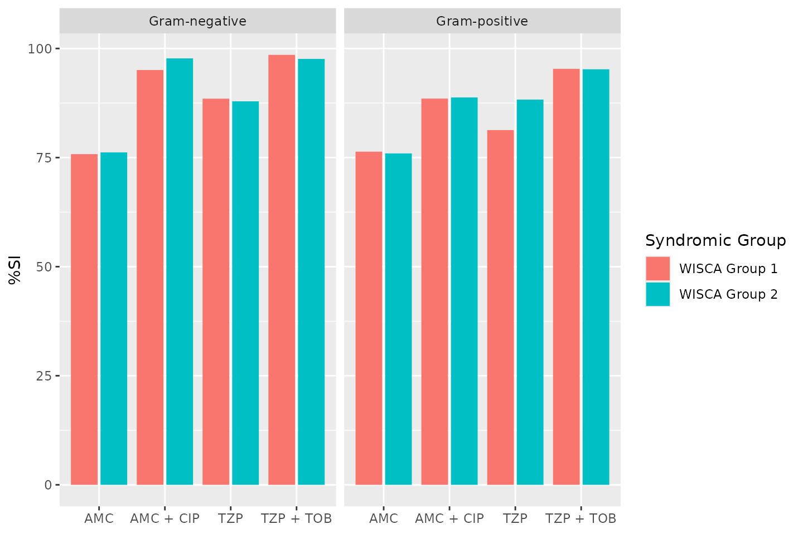

Note: values on this page will change with every website update since they are based on randomly created values and the page was written in R Markdown. However, the methodology remains unchanged. This page was generated on 27 May 2023.
Introduction
Conducting AMR data analysis unfortunately requires in-depth knowledge from different scientific fields, which makes it hard to do right. At least, it requires:
- Good questions (always start with those!) and reliable data
- A thorough understanding of (clinical) epidemiology, to understand the clinical and epidemiological relevance and possible bias of results
- A thorough understanding of (clinical) microbiology/infectious diseases, to understand which microorganisms are causal to which infections and the implications of pharmaceutical treatment, as well as understanding intrinsic and acquired microbial resistance
- Experience with data analysis with microbiological tests and their results, to understand the determination and limitations of MIC values and their interpretations to SIR values
- Availability of the biological taxonomy of microorganisms and probably normalisation factors for pharmaceuticals, such as defined daily doses (DDD)
- Available (inter-)national guidelines, and profound methods to apply them
Of course, we cannot instantly provide you with knowledge and
experience. But with this AMR package, we aimed at
providing (1) tools to simplify antimicrobial resistance data cleaning,
transformation and analysis, (2) methods to easily incorporate
international guidelines and (3) scientifically reliable reference data,
including the requirements mentioned above.
The AMR package enables standardised and reproducible
AMR data analysis, with the application of evidence-based rules,
determination of first isolates, translation of various codes for
microorganisms and antimicrobial agents, determination of (multi-drug)
resistant microorganisms, and calculation of antimicrobial resistance,
prevalence and future trends.
Preparation
For this tutorial, we will create fake demonstration data to work with.
You can skip to Cleaning the data if you already have your own data ready. If you start your analysis, try to make the structure of your data generally look like this:
| date | patient_id | mo | AMX | CIP |
|---|---|---|---|---|
| 2023-05-27 | abcd | Escherichia coli | S | S |
| 2023-05-27 | abcd | Escherichia coli | S | R |
| 2023-05-27 | efgh | Escherichia coli | R | S |
Needed R packages
As with many uses in R, we need some additional packages for AMR data
analysis. Our package works closely together with the tidyverse packages dplyr and ggplot2 by
RStudio. The tidyverse tremendously improves the way we conduct data
science - it allows for a very natural way of writing syntaxes and
creating beautiful plots in R.
We will also use the cleaner package, that can be used
for cleaning data and creating frequency tables.
library(dplyr)
library(ggplot2)
library(AMR)
# (if not yet installed, install with:)
# install.packages(c("dplyr", "ggplot2", "AMR"))The AMR package contains a data set
example_isolates_unclean, which might look data that users
have extracted from their laboratory systems:
example_isolates_unclean
#> # A tibble: 3,000 × 8
#> patient_id hospital date bacteria AMX AMC CIP GEN
#> <chr> <chr> <date> <chr> <chr> <chr> <chr> <chr>
#> 1 J3 A 2012-11-21 E. coli R I S S
#> 2 R7 A 2018-04-03 K. pneumoniae R I S S
#> 3 P3 A 2014-09-19 E. coli R S S S
#> 4 P10 A 2015-12-10 E. coli S I S S
#> 5 B7 A 2015-03-02 E. coli S S S S
#> 6 W3 A 2018-03-31 S. aureus R S R S
#> 7 J8 A 2016-06-14 E. coli R S S S
#> 8 M3 A 2015-10-25 E. coli R S S S
#> 9 J3 A 2019-06-19 E. coli S S S S
#> 10 G6 A 2015-04-27 S. aureus S S S S
#> # ℹ 2,990 more rows
# we will use 'our_data' as the data set name for this tutorial
our_data <- example_isolates_uncleanFor AMR data analysis, we would like the microorganism column to contain valid, up-to-date taxonomy, and the antibiotic columns to be cleaned as SIR values as well.
Taxonomy of microorganisms
With as.mo(), users can transform arbitrary
microorganism names or codes to current taxonomy. The AMR
package contains up-to-date taxonomic data. To be specific, currently
included data were retrieved on 11 Dec 2022.
The codes of the AMR packages that come from as.mo() are
short, but still human readable. More importantly, as.mo()
supports all kinds of input:
as.mo("Klebsiella pneumoniae")
#> Class 'mo'
#> [1] B_KLBSL_PNMN
as.mo("K. pneumoniae")
#> Class 'mo'
#> [1] B_KLBSL_PNMN
as.mo("KLEPNE")
#> Class 'mo'
#> [1] B_KLBSL_PNMN
as.mo("KLPN")
#> Class 'mo'
#> [1] B_KLBSL_PNMNThe first character in above codes denote their taxonomic kingdom, such as Bacteria (B), Fungi (F), and Protozoa (P).
The AMR package also contain functions to directly
retrieve taxonomic properties, such as the name, genus, species, family,
order, and even Gram-stain. They all start with mo_ and
they use as.mo() internally, so that still any arbitrary
user input can be used:
mo_family("K. pneumoniae")
#> [1] "Enterobacteriaceae"
mo_genus("K. pneumoniae")
#> [1] "Klebsiella"
mo_species("K. pneumoniae")
#> [1] "pneumoniae"
mo_gramstain("Klebsiella pneumoniae")
#> [1] "Gram-negative"
mo_ref("K. pneumoniae")
#> [1] "Trevisan, 1887"
mo_snomed("K. pneumoniae")
#> [[1]]
#> [1] "1098101000112102" "446870005" "1098201000112108" "409801009"
#> [5] "56415008" "714315002" "713926009"Now we can thus clean our data:
our_data$bacteria <- as.mo(our_data$bacteria, info = TRUE)
#> ℹ Microorganism translation was uncertain for four microorganisms. Run
#> mo_uncertainties() to review these uncertainties, or use
#> add_custom_microorganisms() to add custom entries.Apparently, there was some uncertainty about the translation to taxonomic codes. Let’s check this:
mo_uncertainties()
#> Matching scores are based on the resemblance between the input and the full
#> taxonomic name, and the pathogenicity in humans. See ?mo_matching_score.
#>
#> --------------------------------------------------------------------------------
#> "E. coli" -> Escherichia coli (B_ESCHR_COLI, 0.688)
#> Also matched: Enterobacter cowanii (0.600), Eubacterium combesii
#> (0.600), Eggerthia catenaformis (0.591), Eubacterium callanderi
#> (0.591), Enterocloster citroniae (0.587), Eubacterium cylindroides
#> (0.583), Enterococcus casseliflavus (0.577), Enterobacter cloacae
#> cloacae (0.571), Ehrlichia canis (0.567), and Enterobacter cloacae
#> dissolvens (0.565)
#> --------------------------------------------------------------------------------
#> "K. pneumoniae" -> Klebsiella pneumoniae (B_KLBSL_PNMN, 0.786)
#> Also matched: Klebsiella pneumoniae ozaenae (0.707), Klebsiella
#> pneumoniae pneumoniae (0.688), Klebsiella pneumoniae rhinoscleromatis
#> (0.658), Klebsiella pasteurii (0.500), Klebsiella planticola (0.500),
#> Kingella potus (0.400), Kosakonia pseudosacchari (0.361), Kaistella
#> palustris (0.333), Kocuria palustris (0.333), and Kocuria pelophila
#> (0.333)
#> --------------------------------------------------------------------------------
#> "S. aureus" -> Staphylococcus aureus (B_STPHY_AURS, 0.690)
#> Also matched: Staphylococcus aureus aureus (0.643), Staphylococcus
#> argenteus (0.625), Staphylococcus aureus anaerobius (0.625),
#> Streptomyces argenteolus (0.483), Streptomyces aureus (0.474),
#> Streptomyces azureus (0.467), Streptomyces aureorectus (0.444),
#> Streptomyces auratus (0.433), Streptomyces aurantiogriseus (0.429), and
#> Streptomyces aureocirculatus (0.429)
#> --------------------------------------------------------------------------------
#> "S. pneumoniae" -> Streptococcus pneumoniae (B_STRPT_PNMN, 0.750)
#> Also matched: Streptococcus pseudopneumoniae (0.700), Serratia
#> proteamaculans quinovora (0.545), Streptococcus pseudoporcinus (0.536),
#> Staphylococcus pseudintermedius (0.532), Serratia proteamaculans
#> proteamaculans (0.526), Salmonella Portanigra (0.524), Sphingomonas
#> paucimobilis (0.520), Streptococcus pluranimalium (0.519),
#> Streptococcus constellatus pharyngis (0.514), and Salmonella Pakistan
#> (0.500)
#>
#> Only the first 10 other matches of each record are shown. Run
#> print(mo_uncertainties(), n = ...) to view more entries, or save
#> mo_uncertainties() to an object.That’s all good.
Antibiotic results
The column with antibiotic test results must also be cleaned. The
AMR package comes with three new data types to work with
such test results: mic for minimal inhibitory
concentrations (MIC), disk for disk diffusion diameters,
and sir for SIR data that have been interpreted already.
This package can also determine SIR values based on MIC or disk
diffusion values, read more about that on the as.sir()
page.
For now, we will just clean the SIR columns in our data using dplyr:
# method 1, be explicit about the columns:
our_data <- our_data %>%
mutate_at(vars(AMX:GEN), as.sir)
# method 2, let the AMR package determine the eligible columns
our_data <- our_data %>%
mutate_if(is_sir_eligible, as.sir)
# result:
our_data
#> # A tibble: 3,000 × 8
#> patient_id hospital date bacteria AMX AMC CIP GEN
#> <chr> <chr> <date> <mo> <sir> <sir> <sir> <sir>
#> 1 J3 A 2012-11-21 B_ESCHR_COLI R I S S
#> 2 R7 A 2018-04-03 B_KLBSL_PNMN R I S S
#> 3 P3 A 2014-09-19 B_ESCHR_COLI R S S S
#> 4 P10 A 2015-12-10 B_ESCHR_COLI S I S S
#> 5 B7 A 2015-03-02 B_ESCHR_COLI S S S S
#> 6 W3 A 2018-03-31 B_STPHY_AURS R S R S
#> 7 J8 A 2016-06-14 B_ESCHR_COLI R S S S
#> 8 M3 A 2015-10-25 B_ESCHR_COLI R S S S
#> 9 J3 A 2019-06-19 B_ESCHR_COLI S S S S
#> 10 G6 A 2015-04-27 B_STPHY_AURS S S S S
#> # ℹ 2,990 more rowsThis is basically it for the cleaning, time to start the data inclusion.
First isolates
We need to know which isolates we can actually use for analysis without repetition bias.
To conduct an analysis of antimicrobial resistance, you must only include the first isolate of every patient per episode (Hindler et al., Clin Infect Dis. 2007). If you would not do this, you could easily get an overestimate or underestimate of the resistance of an antibiotic. Imagine that a patient was admitted with an MRSA and that it was found in 5 different blood cultures the following weeks (yes, some countries like the Netherlands have these blood drawing policies). The resistance percentage of oxacillin of all isolates would be overestimated, because you included this MRSA more than once. It would clearly be selection bias.
The Clinical and Laboratory Standards Institute (CLSI) appoints this as follows:
(…) When preparing a cumulative antibiogram to guide clinical decisions about empirical antimicrobial therapy of initial infections, only the first isolate of a given species per patient, per analysis period (eg, one year) should be included, irrespective of body site, antimicrobial susceptibility profile, or other phenotypical characteristics (eg, biotype). The first isolate is easily identified, and cumulative antimicrobial susceptibility test data prepared using the first isolate are generally comparable to cumulative antimicrobial susceptibility test data calculated by other methods, providing duplicate isolates are excluded.
M39-A4 Analysis and Presentation of Cumulative Antimicrobial Susceptibility Test Data, 4th Edition. CLSI, 2014. Chapter 6.4
This AMR package includes this methodology with the
first_isolate() function and is able to apply the four
different methods as defined by Hindler
et al. in 2007: phenotype-based, episode-based,
patient-based, isolate-based. The right method depends on your goals and
analysis, but the default phenotype-based method is in any case the
method to properly correct for most duplicate isolates. Read more about
the methods on the first_isolate() page.
The outcome of the function can easily be added to our data:
our_data <- our_data %>%
mutate(first = first_isolate(info = TRUE))
#> ℹ Determining first isolates using an episode length of 365 days
#> ℹ Using column 'bacteria' as input for col_mo.
#> ℹ Using column 'date' as input for col_date.
#> ℹ Using column 'patient_id' as input for col_patient_id.
#> ℹ Basing inclusion on all antimicrobial results, using a points threshold
#> of 2
#> => Found 2,626 'phenotype-based' first isolates (87.6% within scope and
#> 87.5% of total where a microbial ID was available)So only 88% is suitable for resistance analysis! We can now filter on
it with the filter() function, also from the
dplyr package:
For future use, the above two syntaxes can be shortened:
our_data_1st <- our_data %>%
filter_first_isolate()So we end up with 2 626 isolates for analysis. Now our data looks like:
our_data_1st
#> # A tibble: 2,626 × 9
#> patient_id hospital date bacteria AMX AMC CIP GEN first
#> <chr> <chr> <date> <mo> <sir> <sir> <sir> <sir> <lgl>
#> 1 J3 A 2012-11-21 B_ESCHR_COLI R I S S TRUE
#> 2 R7 A 2018-04-03 B_KLBSL_PNMN R I S S TRUE
#> 3 P10 A 2015-12-10 B_ESCHR_COLI S I S S TRUE
#> 4 B7 A 2015-03-02 B_ESCHR_COLI S S S S TRUE
#> 5 W3 A 2018-03-31 B_STPHY_AURS R S R S TRUE
#> 6 J8 A 2016-06-14 B_ESCHR_COLI R S S S TRUE
#> 7 M3 A 2015-10-25 B_ESCHR_COLI R S S S TRUE
#> 8 J3 A 2019-06-19 B_ESCHR_COLI S S S S TRUE
#> 9 G6 A 2015-04-27 B_STPHY_AURS S S S S TRUE
#> 10 P4 A 2011-06-21 B_ESCHR_COLI S S S S TRUE
#> # ℹ 2,616 more rowsTime for the analysis.
Analysing the data
The base R summary() function gives a good first
impression, as it comes with support for the new mo and
sir classes that we now have in our data set:
summary(our_data_1st)
#> patient_id hospital date
#> Length:2626 Length:2626 Min. :2011-01-01
#> Class :character Class :character 1st Qu.:2013-04-14
#> Mode :character Mode :character Median :2015-06-05
#> Mean :2015-06-15
#> 3rd Qu.:2017-08-23
#> Max. :2020-01-01
#> bacteria AMX AMC
#> Class :mo Class:sir Class:sir
#> <NA> :0 %R :43.2% (n=1134) %R :36.1% (n=947)
#> Unique:4 %SI :56.8% (n=1492) %SI :63.9% (n=1679)
#> #1 :B_ESCHR_COLI - %S :41.1% (n=1080) - %S :52.7% (n=1383)
#> #2 :B_STPHY_AURS - %I :15.7% (n=412) - %I :11.3% (n=296)
#> #3 :B_STRPT_PNMN
#> CIP GEN first
#> Class:sir Class:sir Mode:logical
#> %R :42.0% (n=1102) %R :37.0% (n=971) TRUE:2626
#> %SI :58.0% (n=1524) %SI :63.0% (n=1655)
#> - %S :51.9% (n=1362) - %S :59.9% (n=1574)
#> - %I : 6.2% (n=162) - %I : 3.1% (n=81)
#>
glimpse(our_data_1st)
#> Rows: 2,626
#> Columns: 9
#> $ patient_id <chr> "J3", "R7", "P10", "B7", "W3", "J8", "M3", "J3", "G6", "P4"…
#> $ hospital <chr> "A", "A", "A", "A", "A", "A", "A", "A", "A", "A", "A", "A",…
#> $ date <date> 2012-11-21, 2018-04-03, 2015-12-10, 2015-03-02, 2018-03-31…
#> $ bacteria <mo> "B_ESCHR_COLI", "B_KLBSL_PNMN", "B_ESCHR_COLI", "B_ESCHR_COL…
#> $ AMX <sir> R, R, S, S, R, R, R, S, S, S, S, R, S, S, R, R, R, R, I, S,…
#> $ AMC <sir> I, I, I, S, S, S, S, S, S, S, S, S, S, S, S, S, S, R, S, R,…
#> $ CIP <sir> S, S, S, S, R, S, S, S, S, S, S, S, S, S, S, S, S, S, S, S,…
#> $ GEN <sir> S, S, S, S, S, S, S, S, S, S, S, R, S, S, S, S, S, S, S, S,…
#> $ first <lgl> TRUE, TRUE, TRUE, TRUE, TRUE, TRUE, TRUE, TRUE, TRUE, TRUE,…
# number of unique values per column:
sapply(our_data_1st, n_distinct)
#> patient_id hospital date bacteria AMX AMC CIP
#> 260 3 1808 4 3 3 3
#> GEN first
#> 3 1Availability of species
To just get an idea how the species are distributed, create a
frequency table with count() based on the name of the
microorganisms:
our_data %>%
count(mo_name(bacteria), sort = TRUE)
#> # A tibble: 4 × 2
#> `mo_name(bacteria)` n
#> <chr> <int>
#> 1 Escherichia coli 1518
#> 2 Staphylococcus aureus 730
#> 3 Streptococcus pneumoniae 426
#> 4 Klebsiella pneumoniae 326
our_data_1st %>%
count(mo_name(bacteria), sort = TRUE)
#> # A tibble: 4 × 2
#> `mo_name(bacteria)` n
#> <chr> <int>
#> 1 Escherichia coli 1250
#> 2 Staphylococcus aureus 661
#> 3 Streptococcus pneumoniae 399
#> 4 Klebsiella pneumoniae 316Select and filter with antibiotic selectors
Using so-called antibiotic class selectors, you can select or filter columns based on the antibiotic class that your antibiotic results are in:
our_data_1st %>%
select(date, aminoglycosides())
#> ℹ For aminoglycosides() using column 'GEN' (gentamicin)
#> # A tibble: 2,626 × 2
#> date GEN
#> <date> <sir>
#> 1 2012-11-21 S
#> 2 2018-04-03 S
#> 3 2015-12-10 S
#> 4 2015-03-02 S
#> 5 2018-03-31 S
#> 6 2016-06-14 S
#> 7 2015-10-25 S
#> 8 2019-06-19 S
#> 9 2015-04-27 S
#> 10 2011-06-21 S
#> # ℹ 2,616 more rows
our_data_1st %>%
select(bacteria, betalactams())
#> ℹ For betalactams() using columns 'AMX' (amoxicillin) and 'AMC'
#> (amoxicillin/clavulanic acid)
#> # A tibble: 2,626 × 3
#> bacteria AMX AMC
#> <mo> <sir> <sir>
#> 1 B_ESCHR_COLI R I
#> 2 B_KLBSL_PNMN R I
#> 3 B_ESCHR_COLI S I
#> 4 B_ESCHR_COLI S S
#> 5 B_STPHY_AURS R S
#> 6 B_ESCHR_COLI R S
#> 7 B_ESCHR_COLI R S
#> 8 B_ESCHR_COLI S S
#> 9 B_STPHY_AURS S S
#> 10 B_ESCHR_COLI S S
#> # ℹ 2,616 more rows
our_data_1st %>%
select(bacteria, where(is.sir))
#> # A tibble: 2,626 × 5
#> bacteria AMX AMC CIP GEN
#> <mo> <sir> <sir> <sir> <sir>
#> 1 B_ESCHR_COLI R I S S
#> 2 B_KLBSL_PNMN R I S S
#> 3 B_ESCHR_COLI S I S S
#> 4 B_ESCHR_COLI S S S S
#> 5 B_STPHY_AURS R S R S
#> 6 B_ESCHR_COLI R S S S
#> 7 B_ESCHR_COLI R S S S
#> 8 B_ESCHR_COLI S S S S
#> 9 B_STPHY_AURS S S S S
#> 10 B_ESCHR_COLI S S S S
#> # ℹ 2,616 more rows
# filtering using AB selectors is also possible:
our_data_1st %>%
filter(any(aminoglycosides() == "R"))
#> ℹ For aminoglycosides() using column 'GEN' (gentamicin)
#> # A tibble: 971 × 9
#> patient_id hospital date bacteria AMX AMC CIP GEN first
#> <chr> <chr> <date> <mo> <sir> <sir> <sir> <sir> <lgl>
#> 1 J5 A 2017-12-25 B_STRPT_PNMN R S S R TRUE
#> 2 X1 A 2017-07-04 B_STPHY_AURS R S S R TRUE
#> 3 B3 A 2016-07-24 B_ESCHR_COLI S S S R TRUE
#> 4 V7 A 2012-04-03 B_ESCHR_COLI S S S R TRUE
#> 5 C9 A 2017-03-23 B_ESCHR_COLI S S S R TRUE
#> 6 R1 A 2018-06-10 B_STPHY_AURS S S S R TRUE
#> 7 S2 A 2013-07-19 B_STRPT_PNMN S S S R TRUE
#> 8 P5 A 2019-03-09 B_STPHY_AURS S S S R TRUE
#> 9 Q8 A 2019-08-10 B_STPHY_AURS S S S R TRUE
#> 10 K5 A 2013-03-15 B_STRPT_PNMN S S S R TRUE
#> # ℹ 961 more rows
our_data_1st %>%
filter(all(betalactams() == "R"))
#> ℹ For betalactams() using columns 'AMX' (amoxicillin) and 'AMC'
#> (amoxicillin/clavulanic acid)
#> # A tibble: 471 × 9
#> patient_id hospital date bacteria AMX AMC CIP GEN first
#> <chr> <chr> <date> <mo> <sir> <sir> <sir> <sir> <lgl>
#> 1 M7 A 2013-07-22 B_STRPT_PNMN R R S S TRUE
#> 2 R10 A 2013-12-20 B_STPHY_AURS R R S S TRUE
#> 3 R7 A 2015-10-25 B_STPHY_AURS R R S S TRUE
#> 4 R8 A 2019-10-25 B_STPHY_AURS R R S S TRUE
#> 5 I7 A 2015-08-19 B_ESCHR_COLI R R S S TRUE
#> 6 N3 A 2014-12-29 B_STRPT_PNMN R R R S TRUE
#> 7 Q2 A 2019-09-22 B_ESCHR_COLI R R S S TRUE
#> 8 X7 A 2011-03-20 B_ESCHR_COLI R R S R TRUE
#> 9 C5 A 2015-08-30 B_KLBSL_PNMN R R S R TRUE
#> 10 W9 A 2013-10-02 B_ESCHR_COLI R R S S TRUE
#> # ℹ 461 more rows
# even works in base R (since R 3.0):
our_data_1st[all(betalactams() == "R"), ]
#> ℹ For betalactams() using columns 'AMX' (amoxicillin) and 'AMC'
#> (amoxicillin/clavulanic acid)
#> # A tibble: 471 × 9
#> patient_id hospital date bacteria AMX AMC CIP GEN first
#> <chr> <chr> <date> <mo> <sir> <sir> <sir> <sir> <lgl>
#> 1 M7 A 2013-07-22 B_STRPT_PNMN R R S S TRUE
#> 2 R10 A 2013-12-20 B_STPHY_AURS R R S S TRUE
#> 3 R7 A 2015-10-25 B_STPHY_AURS R R S S TRUE
#> 4 R8 A 2019-10-25 B_STPHY_AURS R R S S TRUE
#> 5 I7 A 2015-08-19 B_ESCHR_COLI R R S S TRUE
#> 6 N3 A 2014-12-29 B_STRPT_PNMN R R R S TRUE
#> 7 Q2 A 2019-09-22 B_ESCHR_COLI R R S S TRUE
#> 8 X7 A 2011-03-20 B_ESCHR_COLI R R S R TRUE
#> 9 C5 A 2015-08-30 B_KLBSL_PNMN R R S R TRUE
#> 10 W9 A 2013-10-02 B_ESCHR_COLI R R S S TRUE
#> # ℹ 461 more rowsGenerate antibiograms
Since AMR v2.0 (March 2023), it is very easy to create different types of antibiograms, with support for 20 different languages.
There are four antibiogram types, as proposed by Klinker et
al. (2021, DOI
10.1177/20499361211011373), and they are all supported by the new
antibiogram() function:
- Traditional Antibiogram (TA) e.g, for the susceptibility of Pseudomonas aeruginosa to piperacillin/tazobactam (TZP)
- Combination Antibiogram (CA) e.g, for the sdditional susceptibility of Pseudomonas aeruginosa to TZP + tobramycin versus TZP alone
- Syndromic Antibiogram (SA) e.g, for the susceptibility of Pseudomonas aeruginosa to TZP among respiratory specimens (obtained among ICU patients only)
- Weighted-Incidence Syndromic Combination Antibiogram (WISCA) e.g, for the susceptibility of Pseudomonas aeruginosa to TZP among respiratory specimens (obtained among ICU patients only) for male patients age >=65 years with heart failure
In this section, we show how to use the antibiogram()
function to create any of the above antibiogram types. For starters,
this is what the included example_isolates data set looks
like:
example_isolates
#> # A tibble: 2,000 × 46
#> date patient age gender ward mo PEN OXA FLC AMX
#> <date> <chr> <dbl> <chr> <chr> <mo> <sir> <sir> <sir> <sir>
#> 1 2002-01-02 A77334 65 F Clinical B_ESCHR_COLI R NA NA NA
#> 2 2002-01-03 A77334 65 F Clinical B_ESCHR_COLI R NA NA NA
#> 3 2002-01-07 067927 45 F ICU B_STPHY_EPDR R NA R NA
#> 4 2002-01-07 067927 45 F ICU B_STPHY_EPDR R NA R NA
#> 5 2002-01-13 067927 45 F ICU B_STPHY_EPDR R NA R NA
#> 6 2002-01-13 067927 45 F ICU B_STPHY_EPDR R NA R NA
#> 7 2002-01-14 462729 78 M Clinical B_STPHY_AURS R NA S R
#> 8 2002-01-14 462729 78 M Clinical B_STPHY_AURS R NA S R
#> 9 2002-01-16 067927 45 F ICU B_STPHY_EPDR R NA R NA
#> 10 2002-01-17 858515 79 F ICU B_STPHY_EPDR R NA S NA
#> # ℹ 1,990 more rows
#> # ℹ 36 more variables: AMC <sir>, AMP <sir>, TZP <sir>, CZO <sir>, FEP <sir>,
#> # CXM <sir>, FOX <sir>, CTX <sir>, CAZ <sir>, CRO <sir>, GEN <sir>,
#> # TOB <sir>, AMK <sir>, KAN <sir>, TMP <sir>, SXT <sir>, NIT <sir>,
#> # FOS <sir>, LNZ <sir>, CIP <sir>, MFX <sir>, VAN <sir>, TEC <sir>,
#> # TCY <sir>, TGC <sir>, DOX <sir>, ERY <sir>, CLI <sir>, AZM <sir>,
#> # IPM <sir>, MEM <sir>, MTR <sir>, CHL <sir>, COL <sir>, MUP <sir>, …Traditional Antibiogram
To create a traditional antibiogram, simply state which antibiotics
should be used. The antibiotics argument in the
antibiogram() function supports any (combination) of the
previously mentioned antibiotic class selectors:
antibiogram(example_isolates,
antibiotics = c(aminoglycosides(), carbapenems()))
#> ℹ For aminoglycosides() using columns 'GEN' (gentamicin), 'TOB'
#> (tobramycin), 'AMK' (amikacin), and 'KAN' (kanamycin)
#> ℹ For carbapenems() using columns 'IPM' (imipenem) and 'MEM' (meropenem)| Pathogen (N min-max) | AMK | GEN | IPM | KAN | MEM | TOB |
|---|---|---|---|---|---|---|
| CoNS (43-309) | 0 | 86 | 52 | 0 | 52 | 22 |
| E. coli (0-462) | 100 | 98 | 100 | 100 | 97 | |
| E. faecalis (0-39) | 0 | 0 | 100 | 0 | 0 | |
| K. pneumoniae (0-58) | 90 | 100 | 100 | 90 | ||
| P. aeruginosa (17-30) | 100 | 0 | 100 | |||
| P. mirabilis (0-34) | 94 | 94 | 94 | |||
| S. aureus (2-233) | 99 | 98 | ||||
| S. epidermidis (8-163) | 0 | 79 | 0 | 51 | ||
| S. hominis (3-80) | 92 | 85 | ||||
| S. pneumoniae (11-117) | 0 | 0 | 0 | 0 |
Notice that the antibiogram() function automatically
prints in the right format when using Quarto or R Markdown (such as this
page), and even applies italics for taxonomic names (by using
italicise_taxonomy() internally).
It also uses the language of your OS if this is either English,
Chinese, Czech, Danish, Dutch, Finnish, French, German, Greek, Italian,
Japanese, Norwegian, Polish, Portuguese, Romanian, Russian, Spanish,
Swedish, Turkish, or Ukrainian. In this next example, we force the
language to be Spanish using the language argument:
antibiogram(example_isolates,
mo_transform = "gramstain",
antibiotics = aminoglycosides(),
ab_transform = "name",
language = "es")
#> ℹ For aminoglycosides() using columns 'GEN' (gentamicin), 'TOB'
#> (tobramycin), 'AMK' (amikacin), and 'KAN' (kanamycin)| Patógeno (N min-max) | Amikacina | Gentamicina | Kanamicina | Tobramicina |
|---|---|---|---|---|
| Gram negativo (35-686) | 98 | 96 | 0 | 96 |
| Gram positivo (436-1170) | 0 | 63 | 0 | 34 |
Combined Antibiogram
To create a combined antibiogram, use antibiotic codes or names with
a plus + character like this:
antibiogram(example_isolates,
antibiotics = c("TZP", "TZP+TOB", "TZP+GEN"))| Pathogen (N min-max) | TZP | TZP + GEN | TZP + TOB |
|---|---|---|---|
| CoNS (29-274) | 30 | 97 | |
| E. coli (416-461) | 94 | 100 | 99 |
| K. pneumoniae (53-58) | 89 | 93 | 93 |
| P. aeruginosa (27-30) | 100 | 100 | |
| P. mirabilis (27-34) | 100 | 100 | |
| S. aureus (7-231) | 100 | 100 | |
| S. epidermidis (5-128) | 100 | 100 | |
| S. hominis (0-74) | 100 | 100 | |
| S. pneumoniae (112-112) | 100 | 100 | 100 |
Syndromic Antibiogram
To create a syndromic antibiogram, the syndromic_group
argument must be used. This can be any column in the data, or e.g. an
ifelse() with calculations based on certain columns:
antibiogram(example_isolates,
antibiotics = c(aminoglycosides(), carbapenems()),
syndromic_group = "ward")
#> ℹ For aminoglycosides() using columns 'GEN' (gentamicin), 'TOB'
#> (tobramycin), 'AMK' (amikacin), and 'KAN' (kanamycin)
#> ℹ For carbapenems() using columns 'IPM' (imipenem) and 'MEM' (meropenem)| Syndromic Group | Pathogen (N min-max) | AMK | GEN | IPM | KAN | MEM | TOB |
|---|---|---|---|---|---|---|---|
| Clinical | CoNS (23-205) | 89 | 57 | 57 | 26 | ||
| ICU | CoNS (10-73) | 79 | |||||
| Outpatient | CoNS (3-31) | 84 | |||||
| Clinical | E. coli (0-299) | 100 | 98 | 100 | 100 | 98 | |
| ICU | E. coli (0-137) | 100 | 99 | 100 | 100 | 96 | |
| Clinical | K. pneumoniae (0-51) | 92 | 100 | 100 | 92 | ||
| Clinical | P. mirabilis (0-30) | 100 | 100 | ||||
| Clinical | S. aureus (2-150) | 99 | 97 | ||||
| ICU | S. aureus (0-66) | 100 | |||||
| Clinical | S. epidermidis (4-79) | 82 | 55 | ||||
| ICU | S. epidermidis (4-75) | 72 | 41 | ||||
| Clinical | S. hominis (1-45) | 96 | 94 | ||||
| Clinical | S. pneumoniae (5-78) | 0 | 0 | 0 | 0 | ||
| ICU | S. pneumoniae (5-30) | 0 | 0 | 0 | 0 |
Weighted-Incidence Syndromic Combination Antibiogram (WISCA)
To create a WISCA, you must state combination therapy in the
antibiotics argument (similar to the Combination
Antibiogram), define a syndromic group with the
syndromic_group argument (similar to the Syndromic
Antibiogram) in which cases are predefined based on clinical or
demographic characteristics (e.g., endocarditis in 75+ females). This
next example is a simplification without clinical characteristics, but
just gives an idea of how a WISCA can be created:
wisca <- antibiogram(example_isolates,
antibiotics = c("AMC", "AMC+CIP", "TZP", "TZP+TOB"),
mo_transform = "gramstain",
minimum = 10, # this should be >= 30, but now just as example
syndromic_group = ifelse(example_isolates$age >= 65 &
example_isolates$gender == "M",
"WISCA Group 1", "WISCA Group 2"))
wisca| Syndromic Group | Pathogen (N min-max) | AMC | AMC + CIP | TZP | TZP + TOB |
|---|---|---|---|---|---|
| WISCA Group 1 | Gram-negative (261-285) | 76 | 95 | 89 | 99 |
| WISCA Group 2 | Gram-negative (380-442) | 76 | 98 | 88 | 98 |
| WISCA Group 1 | Gram-positive (123-406) | 76 | 89 | 81 | 95 |
| WISCA Group 2 | Gram-positive (222-732) | 76 | 89 | 88 | 95 |
Plotting antibiograms
Antibiograms can be plotted using autoplot() from the
ggplot2 packages, since this AMR package
provides an extension to that function:
autoplot(wisca)
To calculate antimicrobial resistance in a more sensible way, also by
correcting for too few results, we use the resistance() and
susceptibility() functions.
Resistance percentages
The functions resistance() and
susceptibility() can be used to calculate antimicrobial
resistance or susceptibility. For more specific analyses, the functions
proportion_S(), proportion_SI(),
proportion_I(), proportion_IR() and
proportion_R() can be used to determine the proportion of a
specific antimicrobial outcome.
All these functions contain a minimum argument, denoting
the minimum required number of test results for returning a value. These
functions will otherwise return NA. The default is
minimum = 30, following the CLSI
M39-A4 guideline for applying microbial epidemiology.
As per the EUCAST guideline of 2019, we calculate resistance as the
proportion of R (proportion_R(), equal to
resistance()) and susceptibility as the proportion of S and
I (proportion_SI(), equal to
susceptibility()). These functions can be used on their
own:
our_data_1st %>% resistance(AMX)
#> [1] 0.4318355Or can be used in conjunction with group_by() and
summarise(), both from the dplyr package:
our_data_1st %>%
group_by(hospital) %>%
summarise(amoxicillin = resistance(AMX))
#> # A tibble: 3 × 2
#> hospital amoxicillin
#> <chr> <dbl>
#> 1 A 0.343
#> 2 B 0.569
#> 3 C 0.375Author: Dr. Matthijs Berends, 26th Feb 2023